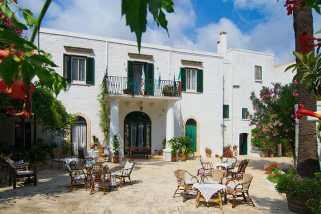

READ ME
DISCOVER MORE
 |
 |
|
LOST WORLD |
CAYE CAULKER |
GOBI DESERT |
| Disappear into the unknown. This is the promise kept by this eerie flat-topped mountain that can only be reached by three-day trek and that inspired Conan Doyle's iconic novel "The lost word". My journey began with a flight from the colonial city of Ciudad Bolivar... | The chaotic, scheduled and busy London life I began to get used to never made so difficult for me to take the time for myself and "go slow". This is, on the contrary, an imperative in the small and bright island of Caye Caulker, in Belize, where this motto is written everywhere and life beats at the rhythm of Nature... | The frosty air of that morning shortened my breath and I could feel my lungs stinging under million of needles. The guide advised us the day before: that would be one of the coldest day of the last 10 years. My group and I were about to spend the next 8 hours of the day, riding in the back seat of a Russian van... |
READ MORE |
READ MORE |
READ MORE |
|  | ||
SOUTH ISLAND CIRCUIT |
MASSERIA IL FRANTOIO |
AUSTRALIA |
| A childhood spent at the top of the South Island, with most holidays featuring a sandfly-infested awning and a gold pan for fun, the beauty of my home island was somewhat lost on me. I now realise that New Zealand's South Island is a truly special place to be... | When it comes to food and beauty there's no better place than Southern Italy. Tired of the fat and ugly London food, I decided that it was time to eat a real "burrata" and be overwhelmed by the white beauty of Ostuni. Masseria Il frantoio sounded to do the trick... | I've never seen such a beautiful contrast of colours, the intense red and purple of the rocks and the bright blue of the sky, but this part of the fascination of the Australian Red Centre... |
READ MORE |
READ MORE |
READ MORE |